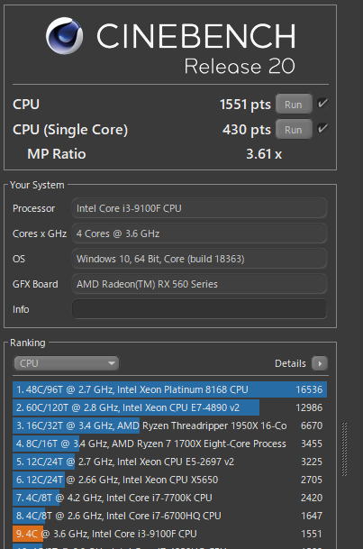

4/23 PCのスペックはどれぐらい必要なのか？
今回はPCのスペックについてまとめました
CPU
まずは一番重要なCPUです
僕が使っているPCのCPUは Corei3 9100F です
cinebenchR20

Corei3 9100FのcinebenchR20スコアです
マルチスレッドが1551点で
シングルスレッドが430点です
1万円以下のCPUにしては良い方じゃないでしょうか
これでもMincraftぐらいなら十分動きますからね
動画編集に必要なCPU
動画編集にはからり高性能なCPUが必要だと思います
Filmoraの無料版をi3 9100Fで使ってみましたがエンコードに時間がかかります
動画編集にはRyzen7やi7が妥当ですね
画像編集に必要なCPU
GIMPなどで画像編集をしてみたことはありますがi3で十分でした
Photoshopの場合でもRyzen5やi5で十分そうですね
ゲームに必要なCPU
ゲームタイトルによっても違いますが
動画編集などのクリエイティブな用途でなければ
ゲームをする人はRyzen5やi5で必要十分だと思います
コスパを重視するならRyzen3やi3ですね
ブラウザやOfficeに必要なCPU
i3でもゲームが動くんだからブラウザなんてどんなCPUでも動きます
ブラウジングをするならPentiumやAthlonで十分でしょう
オフィスをするならPentiumやAthlonなどが選択肢でしょう
格安で済ませたいならCeleronもあります
CPUの値段
2020年4月現在
もう少ししたら
Ryzen3 3100も発売するらしいですね
メモリ
次にメモリです
僕が使っているメモリはDDR4 2666 8GB を1枚です
規格
2020年にメモリを買うならDDR4一択です
コスパがいいのはDDR4 2666です
DDR4 2133と同じぐらいの値段で売っていました
容量
最低限ブラウジングをするなら4GBは必要でしょう
8GBならMincraftなどの軽いゲームであれば動きます
16GBだったら重いゲームも動くと思います
32GBは一般的な使い方なら必要ありません
枚数
2020年に買うなら2枚刺しがおすすめです
1000円ほど高くなりますが大抵のマザーボードで
デュアルチャンネルで動作します
筆者のパソコンは一枚刺しですけど...
値段
2020年4月現在
マザーボード
今度はマザーボードです
自作PC以外ではあまり重要ではない気がしますが...
フォームファクタ
おすすめはATXまたはMicroATXです
拡張性だったらATX一択ですが
値段ならMicroATXです
Mini-ITXは少し高いですがとても小さいです
拡張性
メモリスロットは4本がおすすめです
PCI Express x16はグラボを使うなら必須です
それとM.2スロットがあるものを選ぶといいです
グラフィックボード
次はグラフィックボードです
動画編集に必要なグラフィックボード
これには相当なグラフィックボードが必要だと思います
RX560ではFilmoraの無料版は少し厳しいからです
そうするとRTX2060やRX590などが現実的でしょう
画像編集に必要なグラフィックボード
GIMPでイラストを書く分にはRX560で十分でした
そうなるとGTX1050tiやRX560がいいと思います
コスパを重視するならRX550でもいいと思います
ゲームに必要なグラフィックボード
4KゲーミングならGTX2080やRadeon VIIなどですね...
高すぎます...
ゲーミングモニターならRTX2070やRX5700XTです
それでも高すぎます...
重いフルHDゲームならGTX1660やRX570などです
コスパがなかなか高い価格帯です
軽いゲームならGTX1050tiやRX560などです
僕のグラフィックボードはRX560です
ブラウジングやOfficeに必要なグラフィックボード
グラフィックボードは必要ありません..( ｰ`дｰ´)ｷﾘｯ
最近は内蔵グラフィックも進化していますからね～
ブラウジングなんて内蔵グラフィックでサクサクです
グラフィックボードの値段
2020年4月現在
ストレージ
SSDかHDDか？
この問題については筆者は
CドライブはSSD,
DドライブはHDDだと思っています
SSDはSATAでもNVMeでもどちらでもいいです
メーカーは？
コスパがいいのはWDですが
性能が重要な人はIntelがいいと思います
SSDの値段
OS
基本的にWindows10 Home 一択ですが
格安で済ませたいならLinuxでもいいと思います
本日も見ていただきありがとうございました